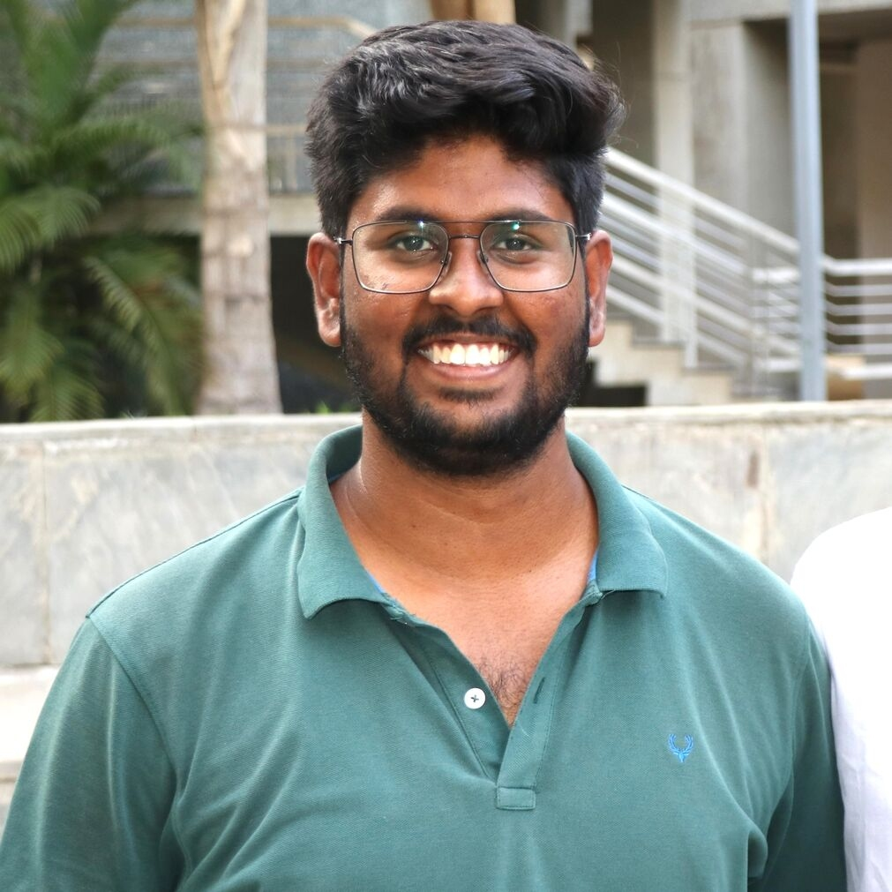
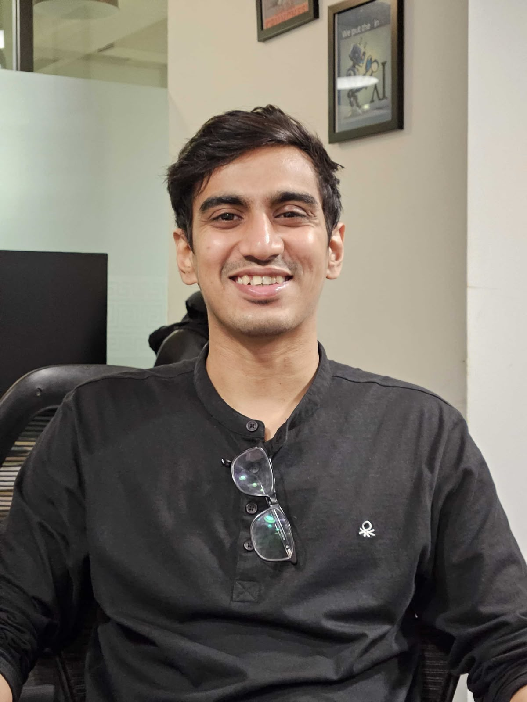
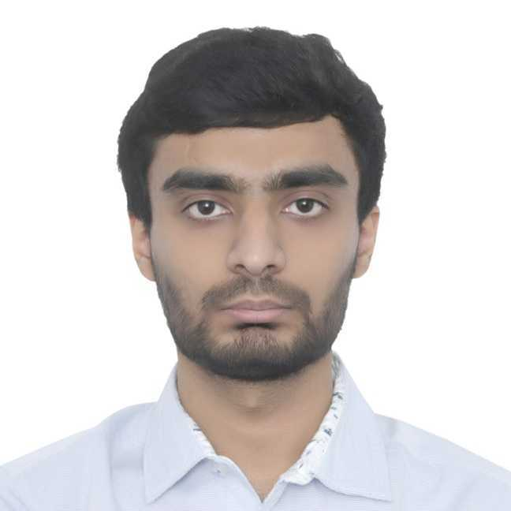
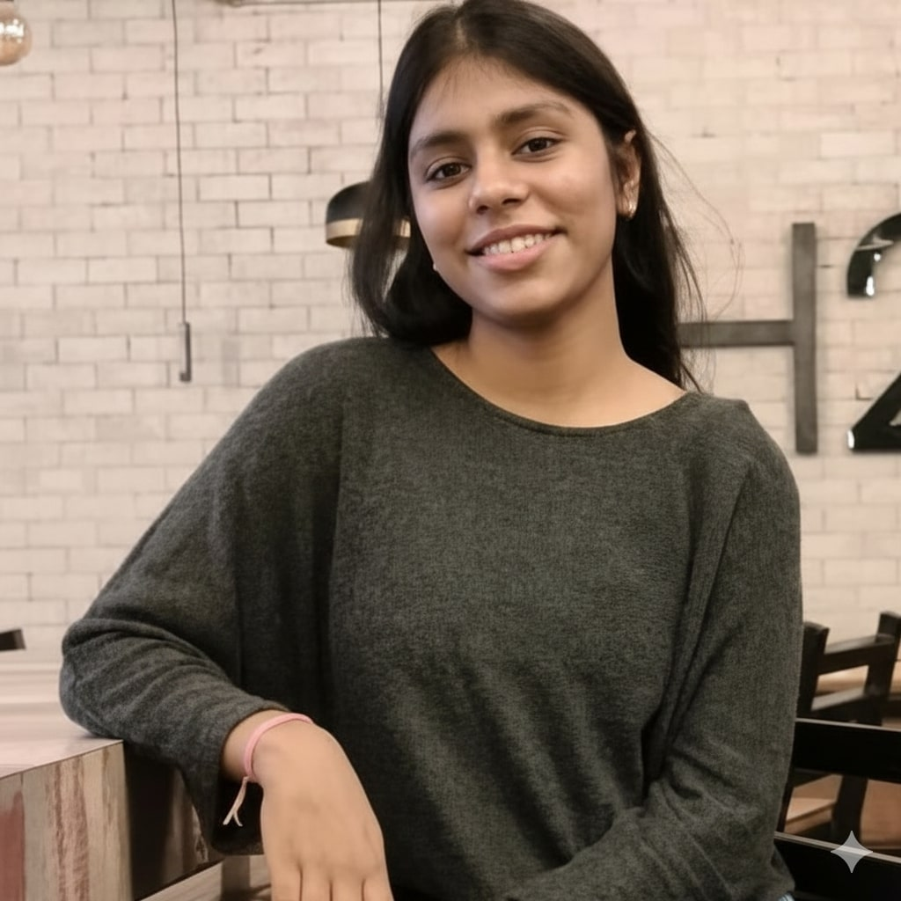
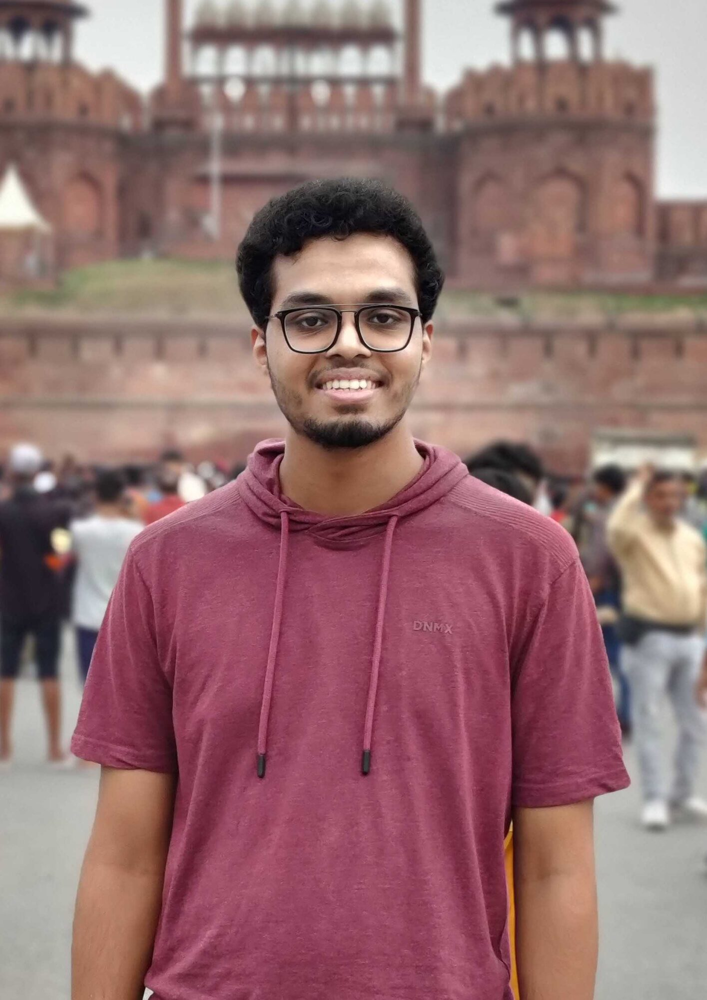
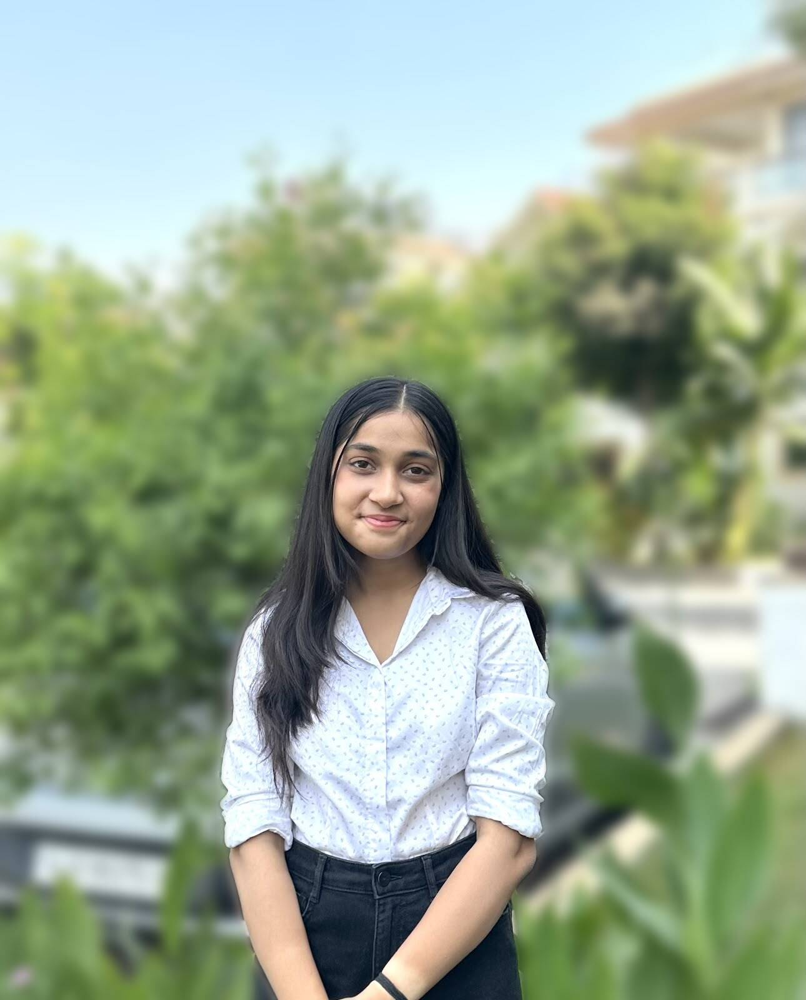
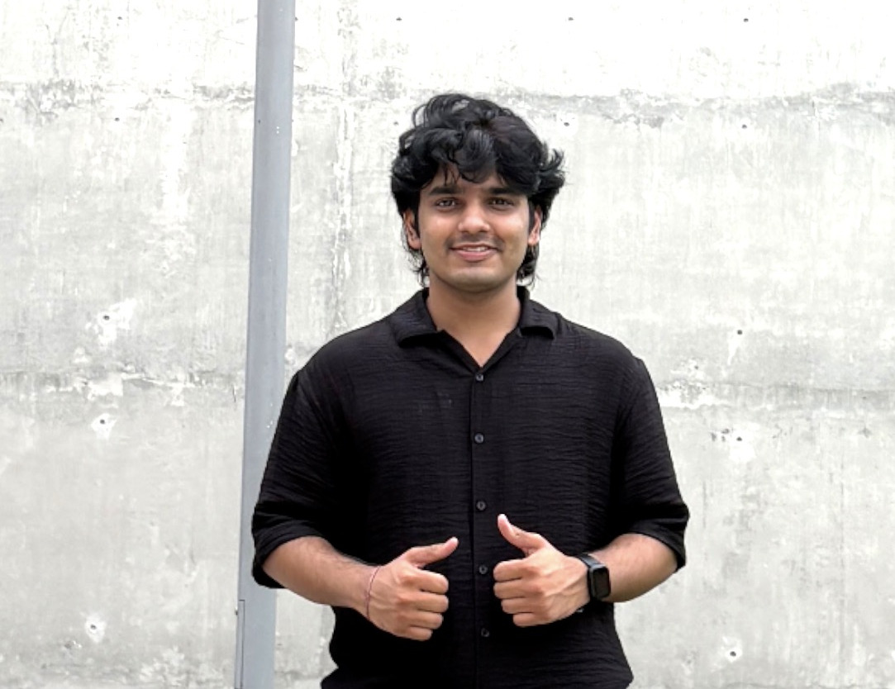
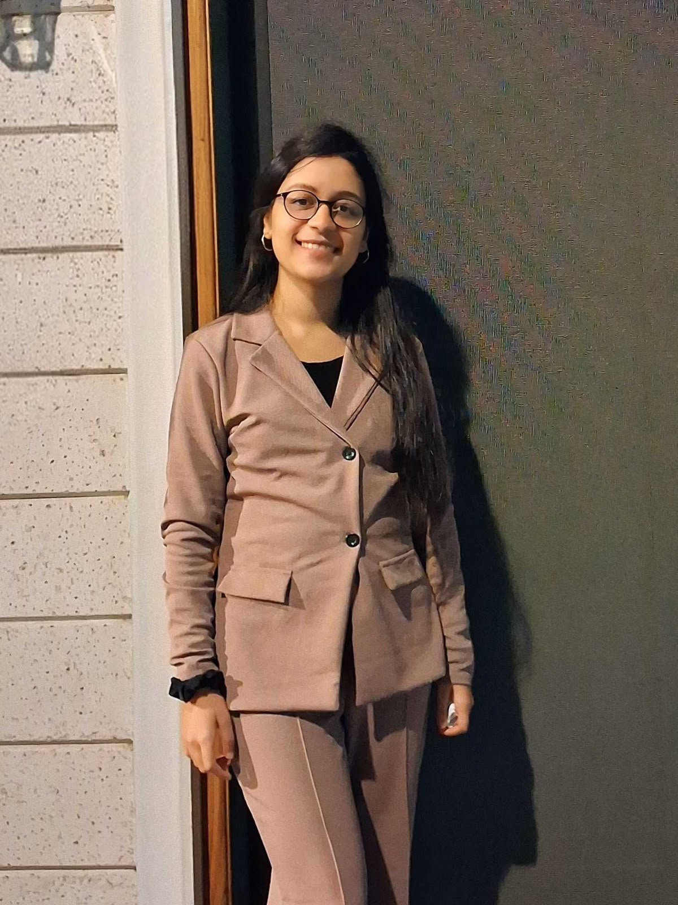
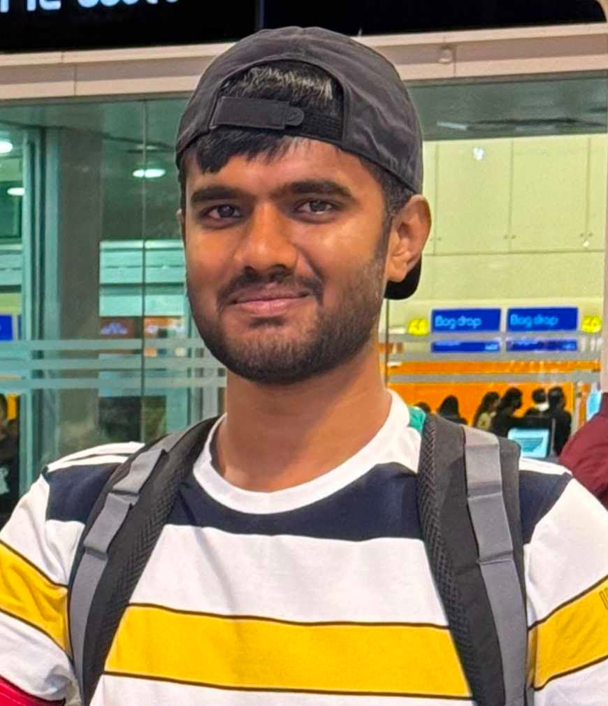

10 Things I Would Say to My Day-One Self Before Joining Sustainability LabAditya Mehta · October 11, 2026
10 Things I Would Say to My Day-One Self Before Joining Sustainability LabAditya Mehta · October 11, 2026
People
17 researchers today, 50+ alumni in academia and industry, and two PhD graduates.
 The teamPhD, MTech and research fellows
The teamPhD, MTech and research fellows
 AlumniWhere 50+ alumni are now
AlumniWhere 50+ alumni are now
 StoriesAlumni in their own words
StoriesAlumni in their own words
 PhotosDefences, dinners, visits
PhotosDefences, dinners, visits

Prof. Nipun Batra
Associate Professor, Computer Science, IIT Gandhinagar · postdoc at the University of Virginia · PhD from IIIT Delhi
PhD students
 Rishabh Mondal Computer Vision · Earth Observations · since 2023
Rishabh Mondal Computer Vision · Earth Observations · since 2023

Ujjwal K. Gupta Satellite Data · Machine Learning · since 2024

Durgesh Mishra Machine Learning · Computer Vision · AI for Science · since 2026
No matching items
MTech students

Parv Thacker Healthcare · IoT · Computer Vision · since 2025Balbir Prasad Physics Informed ML · AI weather forecasting · since 2025

Hemani Tekwani Computer Vision · GeoAI · since 2025Saaransh Shandilya Natural Language Processing · LLMs · since 2025

Zayed Mudassir VLM · Computer Vision · since 2025Sanjana Mehta Healthcare · Computer Vision · LLM · Federated Learning · since 2026

Jheel Jhala Machine Learning · Computer Vision · Sensing · since 2026Ojas Gupta Optimization of DL Algorithms · MLMs · QML · since 2026
Syed Mohd Tashif Explainable AI · LLMs · VLMs · since 2026

Anant Khandelwal Generative AI · LLMs · AI Development · since 2026
No matching items
Research fellows

Avantika Agarwal Machine Learning · Deep Learning · NLP · Computer Vision · Sustainability & Climate Tech · AI for Social Impact · since 2026
Thejas T G Computer Vision · Earth Observations · since 2026Vivek Kumar AI & Optimization · Applied Machine Learning · Quantitative Research · since 2026
No matching items
New member? Add yourself to data/members.yml and put your photo in images/members/.
PhD graduates

Dr. Zeel B Patel
Postdoc at Microsoft Research India
January 2020 - February 2026 · Microsoft Research India PhD Award

Dr. Rishiraj Adhikary
Postdoc at University of Cambridge (with Prof. Cecilia Mascolo)
July 2019 - January 2025 · First PhD graduate · Fulbright-Nehru Fellow
Read the story
No matching items
Alumni
Where they are now: Cambridge, Microsoft Research, Google DeepMind, CMU, UIUC, Texas A&M, NYU, Oracle, Microsoft, Nykaa, Wadhwani AI, Skan.ai and more.
| Name | Here | Year | Now |
|---|---|---|---|
| Dr. Zeel B Patel | PhD | 2026 |
Postdoc at Microsoft Research India Microsoft Research India PhD Award |
| Dr. Rishiraj Adhikary · story | PhD | 2025 |
Postdoc at University of Cambridge (with Prof. Cecilia Mascolo) First PhD graduate · Fulbright-Nehru Fellow |
| Aditya Mehta · story | BTech | 2026 | Gen-AI Developer at Barclays Investment Bank |
| Aditi Agarwal · story | BTech | 2024 | Predoc at Google DeepMind |
| Arun Reddy Anugu · story | BTech | 2024 | MS in Computer Vision (MSCV) at Carnegie Mellon University |
| Progyan Das | BTech | 2024 | Applied Scientist at Microsoft |
| Madhav Kanda | BTech | 2024 | MS at University of Illinois Urbana-Champaign |
| Dhruv Patel | BTech | 2024 | MS at Texas A&M University |
| Haikoo Khandor | BTech | 2024 | MS at Texas A&M University |
| Utkarsh Mittal | BTech | 2024 | MS at NYU Tandon |
| Inderjeet Bhullar | BTech | 2024 | Data Scientist at Skan.ai |
| Kalash Kankaria · story | BTech | 2024 | MS in Computational Finance at Carnegie Mellon University (previously Data Scientist at Skan.ai) |
| Rahul Chembakasseril | BTech | 2024 | Data Scientist at Skan.ai |
| Aadesh Desai · story | BTech | 2023 | MS at Carnegie Mellon University |
| Saagar Parikh | BTech | 2023 | MS at Carnegie Mellon University |
| Eshan Gujarathi | BTech | 2023 | Predoc at IIT Madras |
| Hitarth Gandhi | BTech | 2023 | MS at UC Irvine |
| Gautam Vashishtha · story | BTech | 2023 | Data Scientist at Skan.AI |
| Xhitij Choudhary | BTech | 2023 | Data Scientist at Skan.AI |
| Palak Purohit | BTech | 2022 | MS at Caltech |
| Hetvi Shastri · story | BTech | 2022 | PhD at UMass Amherst |
| Chris Francis | BTech | 2022 | MS at UC San Diego |
| Dhruvi Lodhavia | BTech | 2022 | MS at UC San Diego |
| Harsh Patel | BTech | 2022 | MS at UC San Diego |
| Shivam Sahni | BTech | 2022 | MS at UC San Diego |
| Soham Pachpande | BTech | 2020 | HSBC → MS at UCSD → SWE at Salesforce |
| Deepak Narayanan | BTech | 2020 | Microsoft Research India → MS at ETH Zurich |
| Apoorv Agnihotri | BTech | 2020 | Wadhwani AI → Data Scientist at Rephrase.ai |
| Kukunuri Rithwik · story | BTech | 2020 | Jio → ML Scientist at Nykaa |
| Abhay Pisharodi | MTech | 2026 | Associate AI Engineer at Sahana System Ltd. |
| Abhyudaya Nair | MTech | 2026 | Samsung R&D Intern |
| Diya Thakor | MTech | 2026 | Samsung R&D Intern |
| Vinayak Rana | MTech | 2026 | Samsung R&D Engineer |
| Suruchi Hardaha | MTech | 2026 | SW Engineer at Qualcomm |
| Poornima Bhatia | MTech | 2025 | MTech Graduate • Accessibility Research |
| Prince Kumar | MTech | 2025 | MTech Graduate • LLMs & Air Quality |
| Shataxi Dubey · story | MTech | 2025 | MTech Graduate • Computer Vision & VLMs |
| Ayush Shrivastava | MTech | 2024 | PhD at IIT Gandhinagar |
| Suraj Jaiswal | MTech | 2024 | Research Scientist at Neuroreef Labs |
| Ankita Jain · story | MTech | 2023 | Member of Technical Staff at Oracle |
| Karan Kumar | MTech | 2020 | Software Engineer at Trading Technologies |
| Souvik Roy · story | MTech | 2020 | Senior Consultant at eClerx |
| Kirtan Gangani | Research assistant | Research Fellow | |
| Deena Lad | Research assistant | PhD student at IIT Bombay | |
| Vaibhavi Tiwari | Research assistant | Research Fellow | |
| Tanu Tiwari | Research assistant | 2025 | Research Fellow • Machine Learning & Research Methods |
| Meenakshi Prakash | Research assistant | 2025 | Research Fellow • Data Science & Computational Analysis |
| Prerna Khanna | Research assistant | PhD student at Stony Brook University | |
| Tanmay Srivastava | Research assistant | PhD student at Stony Brook University | |
| Kaushal Modi | Research assistant | Data Scientist at InfiBeam | |
| Rohit Patil | Research assistant | Software Engineer at Publicis Sapient | |
| Vibhuti Bansal | Visiting intern | 2022 | Software Engineer at CRED |
| Devodita Chakravarty · story | Visiting intern | 2024 | Winner of Bhalodia-Khetan Excellence Award |
| Ami Ashish Buch | Visiting intern | 2024 | Research Intern |
| Sajay Raj | Visiting intern | 2024 | Research Intern |
| Muhammad Zaid Hassan | Visiting intern | 2024 | Research Intern |
| Omisha Guha | Visiting intern | 2024 | Research Intern |
No matching items
In their words
 Learning to Start from the Basics: My Journey at Sustainability Lab
Learning to Start from the Basics: My Journey at Sustainability Lab Shillong to Cambridge via Sustainability Lab
Shillong to Cambridge via Sustainability Lab From Visualizations to Real-World Impact: My Journey at the Sustainability Lab
From Visualizations to Real-World Impact: My Journey at the Sustainability LabPhotos


No matching items